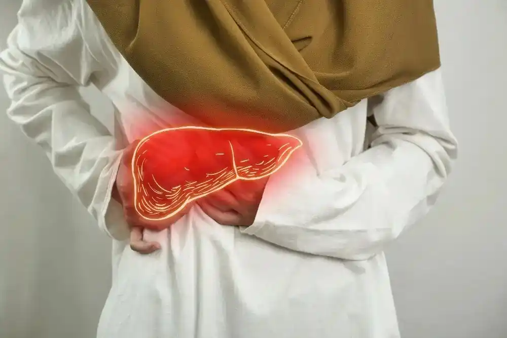

फैटी लिवर के लक्षण (हिंदी में): शुरुआती संकेत, रेड फ्लैग्स और कब डॉक्टर को दिखाएं
.webp)
Senior Liver Transplant & HPB Surgeon with 15+ years of clinical expertise.
17 Feb 2026

फैटी लिवर में सबसे बड़ी परेशानी यह है कि शुरुआत में अक्सर कोई साफ लक्षण नहीं दिखता। और जब हल्के लक्षण आते भी हैं, तो लोग उन्हें गैस, थकान, खराब नींद या काम के तनाव का नाम देकर टाल देते हैं। इसलिए कई लोगों को फैटी लिवर का पता तभी चलता है जब अल्ट्रासाउंड या ब्लड टेस्ट किसी और वजह से कराए जाते हैं।
इस लेख में आपको फैटी लिवर के शुरुआती लक्षण, खतरे के संकेत (रेड फ्लैग्स), कब डॉक्टर को दिखाना चाहिए, और कौन से बेसिक टेस्ट मदद करते हैं, सब कुछ आसान हिंदी में मिलेगा। अगर आप “फैटी लिवर क्या है?” का पूरा बेसिक समझना चाहते हैं, तो
हमारा pillar लेख भी पढ़ें: “फैटी लिवर क्या है? (हिंदी गाइड)” ।
फैटी लिवर में लक्षण क्यों आते हैं?
लिवर में फैट बढ़ने से क्या बदलता है?
लिवर आपका “फिल्टर और फूड-प्रोसेसिंग सिस्टम” है। जब लिवर की कोशिकाओं में जरूरत से ज्यादा फैट जमा हो जाता है, तो लिवर थोड़ा heavy हो सकता है और कुछ लोगों में सूजन (inflammation) भी बढ़ सकती है। इसका असर धीरे-धीरे आपकी एनर्जी, पाचन और शरीर के मेटाबॉलिज्म पर पड़ सकता है।
ध्यान देने वाली बात यह है कि:
- हर व्यक्ति में फैटी लिवर का असर एक जैसा नहीं
होता
- कुछ लोगों में लक्षण जल्दी दिखते हैं, कुछ में देर
से
- कई बार लक्षण नहीं दिखते, लेकिन अंदरूनी बदलाव चल
रहे होते हैं
इसलिए केवल “लक्षण हैं या नहीं” से फैटी लिवर की गंभीरता तय नहीं होती। रिपोर्ट और टेस्ट का रोल यहाँ बहुत महत्वपूर्ण होता है।
शुरुआती लक्षण (Early Symptoms) जिन्हें लोग अक्सर इग्नोर कर देते हैं
1) थकान और कमजोरी
फैटी लिवर वाले बहुत से लोग कहते हैं, “बस एनर्जी नहीं रहती।” यह थकान ऐसी हो सकती है:
- सुबह उठने के बाद भी fresh feel न
होना
- छोटे काम में भी थक
जाना
- ध्यान और फोकस कम होना
यह थकान सिर्फ फैटी लिवर से ही हो, ऐसा जरूरी नहीं है। लेकिन अगर आपकी रिपोर्ट में फैटी लिवर है और यह थकान लगातार चल रही है, तो इसे ignore नहीं करना चाहिए।
2) भूख और पेट से जुड़े संकेत
ये लक्षण बहुत common हैं, इसलिए लोग इन्हें गैस की problem मान लेते हैं:
- भूख कम लगना
- थोड़ा खाने पर भी जल्दी पेट भर
जाना
- पेट में गैस/ब्लोटिंग
- खाना खाने के
बाद भारीपन
अगर ये symptoms हफ्तों से चल रहे हैं और आप साथ में वजन बढ़ने, शुगर बढ़ने या लिपिड बढ़ने जैसी समस्या से जूझ रहे हैं, तो liver evaluation helpful हो सकता है।
3) पेट के दाहिने ऊपर हिस्से में भारीपन
कुछ लोगों को दाहिनी तरफ ऊपर (right upper abdomen) हल्का:
- भारीपन
- खिंचाव
- या dull सा discomfort
हो सकता है। यह तेज दर्द जैसा नहीं होता। अगर discomfort लगातार बना रहे या बढ़ता जाए, तो डॉक्टर से check कराना बेहतर है।
ग्रेड के हिसाब से लक्षण (Grade 1 / 2 / 3)
ग्रेड 1 (Mild)
- अक्सर कोई लक्षण नहीं होता
- रिपोर्ट में incidental finding की तरह आता
है
- lifestyle changes से सुधार की संभावना अच्छी होती
है
ग्रेड 2 (Moderate)
- थकान, ब्लोटिंग, heavy feel जैसे symptoms ज्यादा
महसूस हो सकते हैं
- कई लोगों में शुगर/ट्राइग्लिसराइड्स बढ़े होते
हैं
- डाइट और रूटीन को serious तरीके से follow करना
जरूरी हो जाता है
ग्रेड 3 (Severe)
- लिवर पर स्ट्रेस बढ़ सकता है
- डॉक्टर FibroScan या extra tests की सलाह दे सकते
हैं
- इस stage में self-treatment या delay सही नहीं
होता
नोट: ग्रेड का मतलब सिर्फ फैट की मात्रा से होता है, लेकिन डॉक्टर severity समझने के लिए overall picture देखते हैं: आपकी रिपोर्ट, LFT, sugar, lipids, और जरूरत पर FibroScan।
रेड फ्लैग्स (Danger Signs) जिन्हें नजरअंदाज नहीं करना चाहिए
फैटी लिवर के ज्यादातर केस में लक्षण हल्के होते हैं, लेकिन कुछ संकेत ऐसे हैं जो बताते हैं कि मामला केवल “simple fatty liver” से आगे बढ़ सकता है। ऐसे में जल्दी evaluation जरूरी होता है।
1) पीलिया जैसे संकेत
अगर आपको इनमें से कुछ दिखे, तो डॉक्टर से तुरंत बात करें:
- आंखों या त्वचा का पीला
पड़ना
- पेशाब का बहुत गहरा रंग
- मल का रंग बहुत हल्का/फीका
ये संकेत लिवर की processing प्रभावित होने की तरफ इशारा कर सकते हैं।
2) पेट या पैरों में सूजन
- पेट का आकार धीरे-धीरे या अचानक बढ़ना
- टखनों/पैरों में सूजन
अगर सूजन तेजी से बढ़ रही है या सांस फूलने लगे, तो delay न करें।
3) तेज दर्द, लगातार उल्टी, तेज बुखार
- पेट में तेज दर्द
- लगातार उल्टी
- तेज बुखार के साथ कमजोरी
ये संकेत infection या inflammation जैसी स्थिति की ओर जा सकते हैं, खासकर अगर पहले से लिवर की समस्या हो।
4) खून की उल्टी या काला मल (Emergency)
- खून की उल्टी
- काला, टार जैसा मल
यह emergency संकेत हैं। ऐसे में घर पर wait करना सही नहीं है।
5) अचानक भ्रम (confusion) या बहुत ज्यादा नींद
अगर व्यक्ति:
- बातों में उलझने लगे
- बहुत ज्यादा नींद आए
- व्यवहार बदल जाए
तो यह भी एक गंभीर संकेत हो सकता है और medical evaluation जरूरी है।
कब डॉक्टर को दिखाएं? (Simple Decision Guide)
कई लोग सोचते हैं “अभी तो बस Grade 1 है” या “LFT normal है,” इसलिए follow-up टाल देते हैं। एक आसान decision guide मदद कर सकता है।
2 हफ्ते का नियम
अगर ये symptoms 2 हफ्ते से ज्यादा लगातार बने हैं, तो consult करना बेहतर है:
- लगातार थकान
- पेट में heavy feel / bloating
- भूख में कमी
- right side discomfort
अगर आपको diabetes / thyroid / obesity है
इन स्थितियों में fatty liver का risk और progression का chance बढ़ सकता है। इसलिए:
- symptoms mild भी हों, तब भी evaluation useful रहता
है
- diet + metabolic control को साथ-साथ plan करना
जरूरी होता है
अगर रिपोर्ट में Grade 2 या Grade 3 है
- lifestyle बदलाव को “सोमवार से” पर मत टालिए
- doctor-guided plan जल्दी बनाइए
- follow-up timeline clear करिए
कौन से टेस्ट कराने चाहिए? (Doctor-guided List)
1) Blood tests (बेसिक लेकिन useful)
डॉक्टर आमतौर पर ये जांचें देखते हैं:
- LFT (लिवर एंजाइम और
bilirubin)
- HbA1c / Sugar profile (शुगर
कंट्रोल)
- Lipid profile (cholesterol,
triglycerides)
कई बार केस के हिसाब से डॉक्टर सलाह दे सकते हैं:
- Thyroid profile
- Hepatitis screening (कुछ patients
में)
एक जरूरी बात: फैटी लिवर में कभी-कभी LFT normal भी आ सकता है, इसलिए रिपोर्ट और risk factors के हिसाब से decision लिया जाता है।
2) Ultrasound
- fatty liver detect करने का सबसे common
तरीका
- grading का शुरुआती अंदाजा भी यहीं से मिलता
है
3) FibroScan (जरूरत पड़ने पर)
अगर डॉक्टर को fibrosis (scarring) का risk लगे, या Grade ज्यादा हो, तो FibroScan help करता है:
- liver stiffness check
- आगे बढ़ने का risk समझने में मदद
लक्षण कम करने के लिए तुरंत क्या करें? (Safe Next Steps)
यह कोई “instant cure” नहीं है, लेकिन ये safe steps अक्सर symptoms और liver stress दोनों में मदद करते हैं:
1) मीठा और शुगर ड्रिंक कम करें
- cold drinks, packed juices, sweets कम करें
- मीठी चाय/कॉफी daily habit है तो मात्रा
घटाएं
2) 30–45 मिनट walking शुरू करें
- शुरुआत slow रखें, लेकिन daily रखें
- बैठकर काम करने वालों के लिए हर 60–90 मिनट में 3–5
मिनट चलना भी मदद करता है
3) रात का खाना हल्का और समय पर
- late-night heavy dinner fatty liver में worsen कर
सकता है
- dinner के बाद तुरंत सोने से बचें
4) alcohol और random supplements avoid करें
- alcohol fatty liver को जल्दी खराब कर सकता
है
- “liver detox” या random herbal चीजें बिना सलाह के
न लें
➡️ अगर आपको detailed roadmap चाहिए, तो pillar guide देखें:
“फैटी लिवर क्या
है? (हिंदी गाइड)”
➡️ Diet पर practical plan चाहिए, तो supporting blog:
“फैटी लिवर डाइट चार्ट
(हिंदी में): 7 दिन का आसान इंडियन मील प्लान”
➡️ Avoid list चाहिए, तो supporting blog:
“फैटी लिवर में क्या नहीं खाना
चाहिए: Foods to Avoid + हेल्दी स्वैप्स (हिंदी)”
FAQs (फैटी लिवर के लक्षणों पर अक्सर पूछे जाने वाले सवाल)
1) क्या फैटी लिवर में दर्द होता है?
कई लोगों को तेज दर्द नहीं होता। कभी-कभी दाहिनी तरफ ऊपर वाले पेट में भारीपन या हल्की असहजता हो सकती है। अगर दर्द बढ़े, लगातार रहे, या बुखार/उल्टी साथ हो, तो डॉक्टर को दिखाएं।
2) क्या थकान सिर्फ फैटी लिवर की वजह से होती है?
नहीं, थकान के कई कारण हो सकते हैं जैसे नींद की कमी, anemia, thyroid, stress या diabetes। लेकिन अगर आपकी रिपोर्ट में fatty liver है और थकान लगातार है, तो इसे ignore न करें और evaluation कराएं।
3) अगर LFT normal है तो क्या फैटी लिवर harmless है?
जरूरी नहीं। कई बार फैटी लिवर में LFT normal भी आ सकता है। Severity समझने के लिए डॉक्टर ultrasound, risk factors, sugar/lipids और जरूरत पर FibroScan को साथ देखकर निर्णय लेते हैं।
4) फैटी लिवर के लक्षण कब शुरू होते हैं?
बहुत लोगों में शुरुआत में कोई लक्षण नहीं होते। लक्षण अक्सर तब महसूस होते हैं जब lifestyle factors लंबे समय तक चलते हैं या liver stress बढ़ता है। इसलिए “लक्षण नहीं हैं” का मतलब “समस्या नहीं है” नहीं होता।
5) क्या फैटी लिवर बढ़कर गंभीर समस्या बन सकता है?
कुछ केस में, अगर कारण कंट्रोल न हो (जैसे weight, sugar, alcohol), तो fatty liver आगे बढ़ सकता है। इसलिए शुरुआती stage में ही diet, activity और metabolic control पर काम करना बेहतर रहता है।
6) किन लोगों को फैटी लिवर के लिए जल्दी जांच करानी चाहिए?
- जिनका वजन बढ़ा हुआ है या पेट
की चर्बी ज्यादा है
- जिनको diabetes /
pre-diabetes है
- जिनका cholesterol/triglycerides
बढ़ा है
- जिनकी lifestyle में activity कम है
- जिनका alcohol intake है
इनमें symptoms हल्के हों तब भी evaluation useful होता है।
7) फैटी लिवर में कौन सा टेस्ट सबसे जरूरी है?
सबसे common और useful combo है:
- Ultrasound
+ LFT
और risk ज्यादा हो तो डॉक्टर HbA1c, lipid profile और जरूरत पर FibroScan भी सलाह दे सकते हैं।
8) फैटी लिवर में “लिवर टॉनिक” लेना ठीक है?
बिना doctor advice के नहीं। कुछ supplements liver को नुकसान भी पहुंचा सकते हैं। फैटी लिवर में सबसे effective approach आमतौर पर lifestyle + metabolic control होता है।
Conclusion + Next Step (क्या करें अब?)
फैटी लिवर के लक्षण अक्सर हल्के और confusing होते हैं, इसलिए लोग उन्हें टाल देते हैं। लेकिन सही समय पर पहचान और सही plan से फैटी लिवर को अक्सर कंट्रोल और सुधारा जा सकता है। अगर आपको लगातार थकान, पेट में भारीपन, भूख कम लगना, या right side discomfort रहता है, तो एक structured evaluation करवाना समझदारी है। और अगर पीलिया, सूजन, तेज बुखार, खून की उल्टी, या confusion जैसे संकेत दिखें, तो delay बिल्कुल न करें।
आपके लिए सबसे उपयोगी next steps
- फैटी लिवर का बेसिक समझना है: “फैटी लिवर क्या है? (हिंदी गाइड)”
- meal plan चाहिए: “फैटी लिवर डाइट चार्ट (हिंदी में)”
- avoid list चाहिए: “फैटी लिवर में क्या नहीं खाना चाहिए”
Quick Checklist (1 मिनट में self-check)
अगर इनमें से 2–3 बातें आपके साथ match करती हैं, तो doctor consult / tests consider करें:
- 2 हफ्ते से ज्यादा थकान या heavy feel >
- पेट की चर्बी / वजन बढ़ना
- diabetes या sugar borderline
- triglycerides/ cholesterol बढ़ा हुआ
- ultrasound में fatty liver लिखा आया
diet में मीठा, fried, packaged food ज्यादा